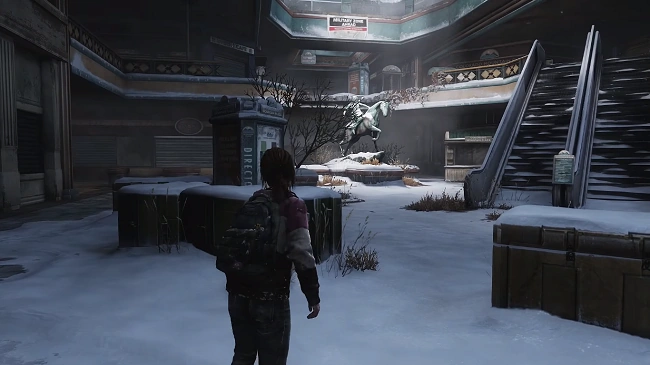

содержание
Скоро вернусь
Скоро вернусь
Глава
Глава

Сезон: Зима
Локация:
Колорадо Маунтен Плаза
Персонажи:
Элли,
Джоэл (только ролик),
Мозоль (только ролик),
Райли (только ролик)
Мультиплеер
Артефакты:
4
Учебники:
0
Комиксы:
0
Медальоны «Цикад»:
0
Хронология
Предыдущая глава:
Н/Д
Следующая глава:
Приключения в торговом центре
«Я сбегаю поищу, чем тебя подлатать. Мозоль... стереги его.»
Элли обращаясь к Джоэлу и лошади
«Скоро вернусь» - первая глава официального дополнения к Одни из Нас (англ. The Last of Us), которая знакомит игроков с Райли Абель и является недостающим звеном в сюжете оригинальной части о том, что случилось с Джоэлом и Элли зимой после ранения первого, но до встречи с Дэвидом.
Игра начинается с концовки главы «Университет» оригинальной игры, Элли и Джоэл убегают от преследующих их каннибалов из Университета Восточного Колорадо. Дуэт сбегает на Мозоли, а Джоэл теряет сознание от полученной раны.
Вступительный ролик повествует о встрече Элли с Райли после длительной разлуки, всего за несколько недель до событий в главе «Карантинная зона». Райли пробирается в школу-интернат для военных и, притворяясь зараженным, кусает спящую в своей комнате Элли. Напуганная девочка вскакивает, откидывая Райли на пол, и хватается за свой выкидной нож. Быстро осознав, что это её исчезнувшая подруга, Элли пытается узнать причины появления Райли. Вторая объявляет, что стала «Цикадой», показав свой медальон, и убеждает подругу проследовать за ней в другое место, где та обещает всё объяснить. На все отговорки Элли о том, что это глупо, и что уже скоро начнутся учения, Райли лишь швыряет подруге штаны и приказывает одеваться. Элли, натягивая штаны, вслух считает, что она идиотка.
После ролика события возвращают к настоящему времени, где Элли отчаянно пытается найти что-нибудь для серьезной раны Джоэла. Ей удалось отыскать безопасное место в одном из магазинов заброшенного торгового центра. Поиски Элли увенчаются слабым, но успехом — ей удается отыскать производственный скотч. Благодаря ему Элли накладывает повязку на рану Джоэла, используя в качестве бинта свою футболку с летнего сезона. Пробубнив себе под нос, что пока и так сойдет, Элли отправляется на разведку по торговому центру для поиска более серьезной помощи своему спутнику. Приказав Мозоли стеречь Джоэла, Элли покидает магазин.
Заперев магазин йогуртов с обратной стороны, Элли исследует торговый центр, натыкается на местную аптеку и быстро осматривается, но практически всё было либо использовано на месте, либо украдено, но при более внимательном осмотре магазина девочка находит запертую дверь и, взглянув через окошко, обнаруживает аптечку в соседней комнате. Намереваясь заполучить её, Элли проводит время уже в поисках ключа от двери. Она натыкается на записку, в которой говорится о коде к соседнему магазину под названием «Американская принцесса», и что там был заперт один из зараженных фармацевтов.
Элли отпирает соседний магазин и заходит в магазин, в котором кишат споры, но иммунитет Элли оставляет девочку спокойной за свое здоровье. В глубине магазина Элли натыкается на разлагаемый труп, обыскав карманы которого, Элли находит ключ, наряду с фотографией с изображением мужчины (фармацевт) и женщины.
По дороге к выходу из магазина, по центральной аллее центра вдоль помещения проходит щелкун. Элли быстро расправляется с ним своим выкидным ножом, использовав бутылку из-под алкоголя, которую тот уронил.
Вернувшись в аптеку и отперев дверь, Элли хватается за аптечку, но обнаруживает, что она пуста. Расстроенная и разозлённая, Элли пинает ящик, но потом её внимание притягивает вертолет с медицинским крестом, потерпевший крушение на крыше торгового центра. Загоревшись новой надеждой, Элли проделывает путь к вертолету. Путь девочки лежит через полуразрушенный салон красоты, на выходе из которого она обнаруживает мёртвого военного. Элли покидает салон, спускается по лестнице и спрыгивает ещё ниже на уровень (прямо под вертолетом).
Глава «Джексон» содержит следующие предметы коллекционирования:
Элли обращаясь к Джоэлу и лошади
«Скоро вернусь» - первая глава официального дополнения к Одни из Нас (англ. The Last of Us), которая знакомит игроков с Райли Абель и является недостающим звеном в сюжете оригинальной части о том, что случилось с Джоэлом и Элли зимой после ранения первого, но до встречи с Дэвидом.
Сюжет
Эпилог
Игра начинается с концовки главы «Университет» оригинальной игры, Элли и Джоэл убегают от преследующих их каннибалов из Университета Восточного Колорадо. Дуэт сбегает на Мозоли, а Джоэл теряет сознание от полученной раны.
Вступительный ролик повествует о встрече Элли с Райли после длительной разлуки, всего за несколько недель до событий в главе «Карантинная зона». Райли пробирается в школу-интернат для военных и, притворяясь зараженным, кусает спящую в своей комнате Элли. Напуганная девочка вскакивает, откидывая Райли на пол, и хватается за свой выкидной нож. Быстро осознав, что это её исчезнувшая подруга, Элли пытается узнать причины появления Райли. Вторая объявляет, что стала «Цикадой», показав свой медальон, и убеждает подругу проследовать за ней в другое место, где та обещает всё объяснить. На все отговорки Элли о том, что это глупо, и что уже скоро начнутся учения, Райли лишь швыряет подруге штаны и приказывает одеваться. Элли, натягивая штаны, вслух считает, что она идиотка.
После ролика события возвращают к настоящему времени, где Элли отчаянно пытается найти что-нибудь для серьезной раны Джоэла. Ей удалось отыскать безопасное место в одном из магазинов заброшенного торгового центра. Поиски Элли увенчаются слабым, но успехом — ей удается отыскать производственный скотч. Благодаря ему Элли накладывает повязку на рану Джоэла, используя в качестве бинта свою футболку с летнего сезона. Пробубнив себе под нос, что пока и так сойдет, Элли отправляется на разведку по торговому центру для поиска более серьезной помощи своему спутнику. Приказав Мозоли стеречь Джоэла, Элли покидает магазин.
Скоро вернусь
Заперев магазин йогуртов с обратной стороны, Элли исследует торговый центр, натыкается на местную аптеку и быстро осматривается, но практически всё было либо использовано на месте, либо украдено, но при более внимательном осмотре магазина девочка находит запертую дверь и, взглянув через окошко, обнаруживает аптечку в соседней комнате. Намереваясь заполучить её, Элли проводит время уже в поисках ключа от двери. Она натыкается на записку, в которой говорится о коде к соседнему магазину под названием «Американская принцесса», и что там был заперт один из зараженных фармацевтов.
Элли отпирает соседний магазин и заходит в магазин, в котором кишат споры, но иммунитет Элли оставляет девочку спокойной за свое здоровье. В глубине магазина Элли натыкается на разлагаемый труп, обыскав карманы которого, Элли находит ключ, наряду с фотографией с изображением мужчины (фармацевт) и женщины.
По дороге к выходу из магазина, по центральной аллее центра вдоль помещения проходит щелкун. Элли быстро расправляется с ним своим выкидным ножом, использовав бутылку из-под алкоголя, которую тот уронил.
Вернувшись в аптеку и отперев дверь, Элли хватается за аптечку, но обнаруживает, что она пуста. Расстроенная и разозлённая, Элли пинает ящик, но потом её внимание притягивает вертолет с медицинским крестом, потерпевший крушение на крыше торгового центра. Загоревшись новой надеждой, Элли проделывает путь к вертолету. Путь девочки лежит через полуразрушенный салон красоты, на выходе из которого она обнаруживает мёртвого военного. Элли покидает салон, спускается по лестнице и спрыгивает ещё ниже на уровень (прямо под вертолетом).
Коллекционные материалы
Глава «Джексон» содержит следующие предметы коллекционирования:
- Артефакты - 3
- Записка с кодом — находится в аптеке Уэстона за прилавком (сюжетный, невозможно пропустить).
- Записка фармацевта — отперев замок в магазин «Американская принцесса», в дальнем левом углу помещения можно будет найти приросшего к полу и стене щелкуна. При обыске Элли найдет ключ от фармацевтического отдела, и в этот момент с заражённого выпадет данный артефакт.
- Записка из салона — пробираясь через развалины салона красоты, выбравшись через расщелину мимо прилавка с лаками для ногтей, у окна, через которое Элли выберется в атриум, будет находиться труп медика военных. Записка будет расположена у его ног.
- Медальоны Цикад - 0
- Справочники - 0
- Комиксы - 0